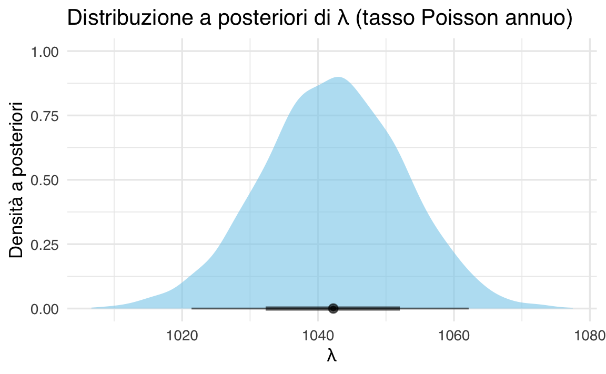

here::here("code", "_common.R") |>
source()
# Load packages
if (!requireNamespace("pacman")) install.packages("pacman")
pacman::p_load(HDInterval, lubridate, brms, bayesplot, tidybayes)70 Modello di Poisson
In questo capitolo imparerai a
- utilizzare brms per adattare ai dati un modello di Poisson.
Prerequisiti
- Leggere Racial Disparities in Police Use of Deadly Force Against Unarmed Individuals Persist After Appropriately Benchmarking Shooting Data on Violent Crime Rates per ottenere una panoramica approfondita su questo fenomeno e sul relativo ambito di ricerca.
Preparazione del Notebook
70.1 Introduzione
Nel precedente Capitolo 52 abbiamo visto come si ottiene la distribuzione a posteriori per i parametri di una Poisson con prior Gamma. Qui, costruiremo lo stesso tipo di analisi in R tramite brms.
70.2 Domanda della ricerca
Come spiegato qui, i dati che esamineremo sono raccolti dal Washington Post con lo scopo di registrare ogni sparatoria mortale negli Stati Uniti ad opera di agenti di polizia, a partire dal 1° gennaio 2015. Il Washington Post ha adottato un approccio sistematico e accurato nella raccolta di queste informazioni, fornendo dati che possono essere utili per valutare i problemi legati alla violenza delle forze di polizia negli Stati Uniti.
Lo scopo della presente analisi dei dati è determinare il tasso di sparatorie fatali da parte della polizia negli Stati Uniti per ogni anno, e fornire una stima dell’incertezza associata a questo valore.
70.3 Importazione e pre-processing dei dati
Scarichiamo i dati direttamente da GitHub:
url <- "https://raw.githubusercontent.com/washingtonpost/data-police-shootings/master/v2/fatal-police-shootings-data.csv"
fps_dat <- read.csv(url, stringsAsFactors = FALSE)
head(fps_dat)
#> id date threat_type flee_status armed_with city
#> 1 3 2015-01-02 point not gun Shelton
#> 2 4 2015-01-02 point not gun Aloha
#> 3 5 2015-01-03 move not unarmed Wichita
#> 4 8 2015-01-04 point not replica San Francisco
#> 5 9 2015-01-04 point not other Evans
#> 6 11 2015-01-04 attack not gun Guthrie
#> county state latitude longitude location_precision
#> 1 Mason WA 47.25 -123.12 not_available
#> 2 Washington OR 45.49 -122.89 not_available
#> 3 Sedgwick KS 37.69 -97.28 not_available
#> 4 San Francisco CA 37.76 -122.42 not_available
#> 5 Weld CO 40.38 -104.69 not_available
#> 6 Logan OK 35.88 -97.42 not_available
#> name age gender race race_source
#> 1 Tim Elliot 53 male A not_available
#> 2 Lewis Lee Lembke 47 male W not_available
#> 3 John Paul Quintero 23 male H not_available
#> 4 Matthew Hoffman 32 male W not_available
#> 5 Michael Rodriguez 39 male H not_available
#> 6 Kenneth Joe Brown 18 male W not_available
#> was_mental_illness_related body_camera agency_ids
#> 1 True False 73
#> 2 False False 70
#> 3 False False 238
#> 4 True False 196
#> 5 False False 473
#> 6 False False 101Convertiamo la colonna delle date e creiamo la variabile “year”:
fps_dat$date <- as.Date(fps_dat$date) # conversione in oggetto Date
fps_dat$year <- as.numeric(format(fps_dat$date, "%Y"))Rimuoviamo eventuali osservazioni del 2025 (dato che è incompleto):
Creiamo poi un data frame con i conteggi per anno:
year_counts <- table(fps$year)
df <- data.frame(
year = as.numeric(names(year_counts)),
events = as.vector(year_counts)
)
df
#> year events
#> 1 2015 995
#> 2 2016 959
#> 3 2017 984
#> 4 2018 992
#> 5 2019 993
#> 6 2020 1021
#> 7 2021 1050
#> 8 2022 1097
#> 9 2023 1164
#> 10 2024 1173Qui, df$events indica quante sparatorie fatali sono state registrate in ogni anno compreso tra il 2015 e il 2023 (estremi inclusi).
70.4 Modello di Poisson
Vogliamo stimare il parametro \(\lambda\) della Poisson (tasso di sparatorie all’anno). Se denotiamo con \(Y\) il numero di sparatorie in un anno, l’assunto è:
\[ Y \sim \text{Poisson}(\lambda). \]
70.5 Distribuzione a priori
70.5.1 Motivazione
Scegliamo una distribuzione a priori su \(\lambda\). In teoria, potremmo adottare una Gamma(\(\alpha, \beta\)) “esplicita”. Tuttavia, brms richiede di specificare i prior nella forma più consueta per i modelli GLM in Stan, ovvero sul log della media di Poisson (in quanto, per difetto, la famiglia Poisson usa il link log).
Se desiderassimo imporre esattamente una prior Gamma su \(\lambda\), potremmo dover ricorrere a definizioni custom in Stan. Di solito, però, si sceglie una normal sul log(\(\lambda\)) che approssimi bene la forma desiderata (la log-normal è un’approssimazione comune di una generica gamma).
70.5.2 Esempio di prior per \(\lambda\)
Ipotizziamo una media a priori di 600 e una deviazione standard di 200. Se vogliamo approssimare questa gamma con una log-normal, basta trovare media e dev. std. (sul log-scale) corrispondenti. Faremo una stima spannometrica direttamente:
- media del log(\(\lambda\)) \(\approx \log(600)\approx 6.4\).
- dev. std. \(\approx 0.3\) (che dà un intervallo ragionevole intorno a 600 \(\pm\) qualche centinaio).
Così scriviamo:
prior_approx <- c(
prior(normal(6.4, 0.3), class = "Intercept") # normal su log(lambda)
)In tal modo, stiamo dicendo a brms che il log della media di Poisson (cioè l’Intercept del modello) segue pressappoco \(\mathcal{N}(6.4, 0.3^2)\). Questo corrisponde a una distribuzione su \(\lambda\) (\(\exp(\log(\)\())\)) i cui valori plausibili si aggirano intorno a 600.
70.6 Stima del tasso annuo
70.6.1 Costruzione del modello in brms
Creiamo un modello di Poisson semplicissimo: un unico intercept (cioè ipotizziamo che in tutti gli anni il tasso sia costante). Chiaramente questa è un’approssimazione: si potrebbe estendere per anno, trend, ecc. Ma qui mostriamo solo la logica gamma-Poisson di base.
# df ha due colonne: year, events
# Poiché brms si aspetta le "osservazioni" riga per riga,
# creeremo un data frame in cui ogni riga rappresenta un anno
# e la colonna events è il numero di sparatorie di quell'anno.
m0 <- brm(
formula = events ~ 1, # solo intercetta
family = poisson(link = "log"),
data = df,
prior = prior_approx,
iter = 3000, # numero di iterazioni (warmup+sampling)
warmup = 1000,
chains = 4,
seed = 123
)Terminato l’addestramento del modello, esaminiamo un sommario dei parametri:
summary(m0)
#> Family: poisson
#> Links: mu = log
#> Formula: events ~ 1
#> Data: df (Number of observations: 10)
#> Draws: 4 chains, each with iter = 3000; warmup = 1000; thin = 1;
#> total post-warmup draws = 8000
#>
#> Regression Coefficients:
#> Estimate Est.Error l-95% CI u-95% CI Rhat Bulk_ESS Tail_ESS
#> Intercept 6.95 0.01 6.93 6.97 1.00 2879 3532
#>
#> Draws were sampled using sampling(NUTS). For each parameter, Bulk_ESS
#> and Tail_ESS are effective sample size measures, and Rhat is the potential
#> scale reduction factor on split chains (at convergence, Rhat = 1).Uscita tipica (semplificata):
-
b_Intercept: stima dell’intercetta sullo scale log. -
Est.Error: errore standard a posteriori. -
l-95% CIeu-95% CI: limiti dell’intervallo di credibilità (IC) al 95% predefinito.
Per ottenere il tasso \(\lambda\) a posteriori possiamo ricorrere a:
# Ottieni i campioni posteriori usando as_draws
posterior_draws_m0 <- as_draws(m0)
# Estrai i campioni dell'intercetta (b_Intercept)
b_Intercept_draws <- posterior_draws_m0 %>%
tidybayes::spread_draws(b_Intercept)
# Converti i campioni in lambda (exp(b_Intercept))
lambda_draws <- exp(b_Intercept_draws$b_Intercept)
# Calcola i quantili
quantile(lambda_draws, probs = c(0.03, 0.5, 0.97))
#> 3% 50% 97%
#> 1022 1042 1061Se vogliamo un IC al 94% (invece del 95%), basta:
o più elegantemente:
tidybayes::median_qi(lambda_draws, .width = 0.94)
#> y ymin ymax .width .point .interval
#> 1 1042 1022 1061 0.94 median qiQuesto ci darà una stima mediana a posteriori di \(\lambda\) e l’intervallo di credibilità al 94%.
70.6.2 Visualizzazione
Possiamo infine tracciare la densità a posteriori del parametro \(\lambda\):
tibble(lambda = lambda_draws) %>%
ggplot(aes(x = lambda)) +
stat_halfeye(fill = "skyblue", alpha = 0.6) +
labs(
title = "Distribuzione a posteriori di λ (tasso Poisson annuo)",
x = "λ",
y = "Densità a posteriori"
)
In sostanza, otteniamo (come nel caso Stan/Python) una stima del tasso \(\lambda\) e un intervallo di incertezza.
70.7 Derivazione analitica (breve richiamo)
Quando la verosimiglianza è di tipo Poisson e si usa un prior Gamma(\(\alpha_0\), \(\beta_0\)), la posterior di \(\lambda\) rimane gamma, con parametri aggiornati:
- \(\alpha_{\text{post}} = \alpha_0 + \sum y_i\)
- \(\beta_{\text{post}} = \beta_0 + n\),
dove \(n\) è il numero di osservazioni (in questo caso, anni) e \(y_i\) sono i conteggi. brms di default usa la scala log per le stime e calcola la posterior via MCMC. La soluzione chiusa rimane utile come conferma analitica.
70.8 Vittime non armate
Riprendiamo ora l’argomento di (Ross et al., 2021) sul differente tasso di sparatorie fatali tra persone di razza caucasica (bianche) e non-caucasica, limitandoci ai casi in cui la vittima risulti disarmata.
70.8.1 Pre-processing dei dati
Filtriamo i casi “unarmed”:
fps_unarmed <- subset(fps, armed_with == "unarmed")Separiamo in due gruppi:
Verifichiamo:
head(white_df)
#> id date threat_type flee_status armed_with city
#> 9 16 2015-01-06 accident not unarmed Burlington
#> 73 342 2015-01-29 move foot unarmed Stillwater
#> 77 114 2015-02-02 flee foot unarmed Hummelstown
#> 120 159 2015-02-17 flee foot unarmed Springfield
#> 137 371 2015-02-23 move not unarmed Omaha
#> 141 180 2015-02-26 threat not unarmed Terre Haute
#> county state latitude longitude location_precision
#> 9 Des Moines IA 40.81 -91.12 not_available
#> 73 Payne OK 36.12 -97.05 not_available
#> 77 Dauphin PA 40.27 -76.71 not_available
#> 120 Greene MO 37.23 -93.32 not_available
#> 137 Douglas NE 41.24 -95.93 not_available
#> 141 Vigo IN 39.46 -87.38 not_available
#> name age gender race race_source
#> 9 Autumn Steele 34 female W not_available
#> 73 Ralph Willis 42 male W not_available
#> 77 David Kassick 59 male W not_available
#> 120 Michael Ireland 31 male W not_available
#> 137 Daniel Elrod 39 male W not_available
#> 141 Alexander Phillip Long 31 male W not_available
#> was_mental_illness_related body_camera agency_ids year
#> 9 False True 287 2015
#> 73 False False 164 2015
#> 77 False False 303 2015
#> 120 False False 350 2015
#> 137 False False 158 2015
#> 141 False False 377;3612 2015head(non_white_df)
#> id date threat_type flee_status armed_with city county
#> 3 5 2015-01-03 move not unarmed Wichita Sedgwick
#> 18 36 2015-01-08 attack not unarmed Strong Union
#> 63 352 2015-01-26 flee car unarmed Tahoka Lynn
#> 84 116 2015-02-04 attack not unarmed Tallahassee Leon
#> 87 125 2015-02-04 accident not unarmed Tempe Maricopa
#> 101 138 2015-02-10 flee foot unarmed Pasco Franklin
#> state latitude longitude location_precision name age
#> 3 KS 37.69 -97.28 not_available John Paul Quintero 23
#> 18 AR 33.11 -92.36 not_available Artago Damon Howard 36
#> 63 TX 33.17 -101.67 not_available Joshua Omar Garcia 24
#> 84 FL 30.47 -84.33 not_available Jeremy Lett 28
#> 87 AZ 33.38 -111.98 not_available Joaquin Hernandez 28
#> 101 WA 46.23 -119.10 not_available Antonio Zambrano-Montes 35
#> gender race race_source was_mental_illness_related body_camera
#> 3 male H not_available False False
#> 18 male B not_available False False
#> 63 male H not_available False False
#> 84 male B not_available False False
#> 87 male H not_available False False
#> 101 male H not_available True False
#> agency_ids year
#> 3 238 2015
#> 18 249 2015
#> 63 179 2015
#> 84 311 2015
#> 87 247;195;2267;319 2015
#> 101 331 2015Ora costruiamo i conteggi anno per anno nei due gruppi:
count_white <- table(white_df$year)
events_by_year_white <- data.frame(
year = as.numeric(names(count_white)),
event_count = as.vector(count_white)
)
count_non_white <- table(non_white_df$year)
events_by_year_non_white <- data.frame(
year = as.numeric(names(count_non_white)),
event_count = as.vector(count_non_white)
)events_by_year_white
#> year event_count
#> 1 2015 31
#> 2 2016 29
#> 3 2017 29
#> 4 2018 26
#> 5 2019 26
#> 6 2020 27
#> 7 2021 7
#> 8 2022 23
#> 9 2023 18
#> 10 2024 6events_by_year_non_white
#> year event_count
#> 1 2015 63
#> 2 2016 35
#> 3 2017 40
#> 4 2018 33
#> 5 2019 28
#> 6 2020 34
#> 7 2021 26
#> 8 2022 28
#> 9 2023 33
#> 10 2024 2270.8.2 Una prior plausibile
Dalle medie dei due campioni, immaginiamo di mettere una prior lognormale su \(\lambda\) attorno a 30 (dev. std. \(\approx 10\)). Approfittiamo di un’ulteriore approssimazione:
# prior ~ lognormal(meanlog = 3.4, sdlog = 0.3) ~ circa media 30, sd ~10
prior_unarmed <- c(
prior(normal(3.4, 0.3), class = "Intercept")
)70.8.3 Stima separata per i due gruppi
70.8.3.1 Gruppo caucasico (white)
m_white <- brm(
formula = event_count ~ 1,
family = poisson(link = "log"),
data = events_by_year_white,
prior = prior_unarmed,
iter = 3000, warmup = 1000, seed = 123
)summary(m_white)
#> Family: poisson
#> Links: mu = log
#> Formula: event_count ~ 1
#> Data: events_by_year_white (Number of observations: 10)
#> Draws: 4 chains, each with iter = 3000; warmup = 1000; thin = 1;
#> total post-warmup draws = 8000
#>
#> Regression Coefficients:
#> Estimate Est.Error l-95% CI u-95% CI Rhat Bulk_ESS Tail_ESS
#> Intercept 3.11 0.07 2.98 3.24 1.00 2896 4026
#>
#> Draws were sampled using sampling(NUTS). For each parameter, Bulk_ESS
#> and Tail_ESS are effective sample size measures, and Rhat is the potential
#> scale reduction factor on split chains (at convergence, Rhat = 1).Otteniamo la posterior su \(\lambda_{\text{white}}\):
# Ottieni i campioni posteriori usando as_draws
posterior_draws_m_white <- as_draws(m_white)
# Estrai i campioni dell'intercetta (b_Intercept)
b_Intercept_draws <- posterior_draws_m_white %>%
tidybayes::spread_draws(b_Intercept)
# Converti i campioni in lambda (exp(b_Intercept))
lambda_draws <- exp(b_Intercept_draws$b_Intercept)
median_qi(lambda_draws, .width = 0.94)
#> y ymin ymax .width .point .interval
#> 1 22.45 19.76 25.33 0.94 median qi70.8.3.2 Gruppo non-caucasico
m_non_white <- brm(
formula = event_count ~ 1,
family = poisson(link = "log"),
data = events_by_year_non_white,
prior = prior_unarmed,
iter = 3000, warmup = 1000, seed = 123
)summary(m_non_white)
#> Family: poisson
#> Links: mu = log
#> Formula: event_count ~ 1
#> Data: events_by_year_non_white (Number of observations: 10)
#> Draws: 4 chains, each with iter = 3000; warmup = 1000; thin = 1;
#> total post-warmup draws = 8000
#>
#> Regression Coefficients:
#> Estimate Est.Error l-95% CI u-95% CI Rhat Bulk_ESS Tail_ESS
#> Intercept 3.53 0.05 3.42 3.63 1.00 3028 3565
#>
#> Draws were sampled using sampling(NUTS). For each parameter, Bulk_ESS
#> and Tail_ESS are effective sample size measures, and Rhat is the potential
#> scale reduction factor on split chains (at convergence, Rhat = 1).Estraiamo la posterior e calcoliamo l’intervallo di credibilità:
# Ottieni i campioni posteriori usando as_draws
posterior_draws_m_non_white <- as_draws(m_non_white)
# Estrai i campioni dell'intercetta (b_Intercept)
b_Intercept_draws <- posterior_draws_m_non_white %>%
tidybayes::spread_draws(b_Intercept)
# Converti i campioni in lambda (exp(b_Intercept))
lambda_draws <- exp(b_Intercept_draws$b_Intercept)
median_qi(lambda_draws, .width = 0.94)
#> y ymin ymax .width .point .interval
#> 1 34.01 30.62 37.48 0.94 median qiIl confronto tra i due intervalli di credibilità, come già visto in precedenza, indica che il tasso di vittime disarmate (per anno) sia più elevato tra i non-caucasici rispetto ai caucasici.
70.8.4 Modello congiunto (due gruppi in un unico fit)
Possiamo anche costruire un unico modello che stimi congiuntamente i due tassi e la loro differenza. Per far ciò, costruiamo un data frame in cui ogni riga è un anno-gruppo:
events_white <- events_by_year_white %>%
mutate(group = "White")
events_nonwhite <- events_by_year_non_white %>%
mutate(group = "NonWhite")
df_groups <- bind_rows(events_white, events_nonwhite) %>%
arrange(year, group)
df_groups
#> year event_count group
#> 1 2015 63 NonWhite
#> 2 2015 31 White
#> 3 2016 35 NonWhite
#> 4 2016 29 White
#> 5 2017 40 NonWhite
#> 6 2017 29 White
#> 7 2018 33 NonWhite
#> 8 2018 26 White
#> 9 2019 28 NonWhite
#> 10 2019 26 White
#> 11 2020 34 NonWhite
#> 12 2020 27 White
#> 13 2021 26 NonWhite
#> 14 2021 7 White
#> 15 2022 28 NonWhite
#> 16 2022 23 White
#> 17 2023 33 NonWhite
#> 18 2023 18 White
#> 19 2024 22 NonWhite
#> 20 2024 6 WhiteOra adattiamo un modello con un effetto fittizio per ogni gruppo (senza intercetta globale, se vogliamo stime distinte e dirette sul link log):
# Il simbolo 0 + group rimuove l’intercetta e stima un parametro di log-tasso
# per il gruppo White e un altro per NonWhite.
m_groups <- brm(
formula = event_count ~ 0 + group, # 2 coefficienti: groupWhite, groupNonWhite
family = poisson(link = "log"),
data = df_groups,
prior = c(
prior(normal(3.4, 0.3), class="b", coef="groupWhite"),
prior(normal(3.4, 0.3), class="b", coef="groupNonWhite")
),
iter = 3000, warmup = 1000, chains = 4, seed=123
)
summary(m_groups)Nell’output avremo:
-
b_groupWhite: stima log(\(\lambda_{\text{white}}\)) -
b_groupNonWhite: stima log(\(\lambda_{\text{nonwhite}}\))
70.8.4.1 Calcolo della differenza delle frequenze attese
Se vogliamo la differenza sulla scala naturale (cioè \(\lambda_{\text{nonwhite}} - \lambda_{\text{white}}\)), basta estrarre i campioni e poi calcolare:
post_mg <- posterior_samples(m_groups)
lambda_white_mg <- exp(post_mg$b_groupWhite)
lambda_nonwhite_mg <- exp(post_mg$b_groupNonWhite)
diff_lambda <- lambda_nonwhite_mg - lambda_white_mg
median_qi(diff_lambda, .width = 0.94)
#> y ymin ymax .width .point .interval
#> 1 11.54 7.126 15.99 0.94 median qiSe questo IC al 94% sta tutto sopra lo zero, possiamo concludere che \(\lambda_{\text{nonwhite}} > \lambda_{\text{white}}\) con alta credibilità.
70.9 Riflessioni Conclusive
Sulla base dei risultati ottenuti dal modello di Poisson, possiamo trarre le seguenti conclusioni:
Il tasso stimato di incidenza delle vittime disarmate uccise dalla polizia negli Stati Uniti è più alto per il gruppo non caucasico rispetto al gruppo caucasico. La differenza media stimata tra i due tassi di incidenza è di 11.508, con una deviazione standard di 2.586. Questo significa che, in media, il tasso per il gruppo non caucasico è di circa 11.5 punti superiore rispetto al tasso per il gruppo caucasico.
L’intervallo di credibilità al 94% per questa differenza va da 6.792 a 16.443, indicando che è molto probabile che la vera differenza tra i tassi di incidenza dei due gruppi si trovi all’interno di questo intervallo. Questo intervallo di credibilità non include lo zero, il che fornisce ulteriore evidenza che il tasso di incidenza per il gruppo non caucasico è effettivamente più alto rispetto al gruppo caucasico.
Inoltre, i tassi di incidenza stimati per ciascun gruppo sono i seguenti:
- Gruppo non caucasico: tasso medio di 35.577 con un intervallo di credibilità al 94% tra 31.978 e 39.260.
- Gruppo caucasico: tasso medio di 24.069 con un intervallo di credibilità al 94% tra 21.098 e 27.285.
Questi risultati indicano chiaramente che il gruppo non caucasico ha un tasso di incidenza più alto di vittime disarmate uccise dalla polizia rispetto al gruppo caucasico. L’intervallo di credibilità per ciascun tasso fornisce una stima robusta e credibile della variabilità di questi tassi.
In sintesi, il modello di Poisson fornisce una forte evidenza che esiste una differenza robusta tra i tassi di incidenza dei due gruppi, con il gruppo non caucasico che presenta un tasso più elevato di vittime disarmate uccise dalla polizia rispetto al gruppo caucasico.
Esercizi
Problemi
Nella finale olimpica di calcio 2024, la Spagna ha sconfitto la Francia per 5 a 3. Supponiamo di voler calcolare la probabilità di superiorità della Spagna rispetto alla Francia utilizzando un modello coniugato Gamma-Poisson (o l’approssimazione brms con prior lognormale).
- Considera che il numero di gol segnati da una squadra segua una Poisson con parametro \(\lambda\).
- Specifica un prior su \(\lambda\) per entrambe le squadre, ad esempio \(\alpha=1\) e \(\beta=1\) nella parametrizzazione Gamma classica (oppure una Normal(0,1.4) sull’intercetta, in modo da avere una media a posteriori analoga).
- Aggiorna la distribuzione a posteriori conoscendo i gol segnati (5 per la Spagna e 3 per la Francia in una singola partita).
- Calcola la probabilità che \(\lambda_{\text{Spagna}} > \lambda_{\text{Francia}}\).
(Ispirato a “The World Cup Problem”, (Downey, 2021).)
Suggerimento: puoi risolvere il problema in modo analitico (Gamma-Poisson con un solo conteggio) oppure puoi usare brms costruendo un dataframe:
df_soccer <- data.frame(
team = c("Spain", "France"),
goals = c(5, 3)
)- Modello:
goals ~ 0 + team,family=poisson(). - Prior su
b_teamSpaineb_teamFrance. - Infine, estrai i draws e calcola la probabilità \(\Pr(\exp(b_{\text{Spain}}) > \exp(b_{\text{France}}))\).
Informazioni sull’Ambiente di Sviluppo
sessionInfo()
#> R version 4.4.2 (2024-10-31)
#> Platform: aarch64-apple-darwin20
#> Running under: macOS Sequoia 15.3.1
#>
#> Matrix products: default
#> BLAS: /Library/Frameworks/R.framework/Versions/4.4-arm64/Resources/lib/libRblas.0.dylib
#> LAPACK: /Library/Frameworks/R.framework/Versions/4.4-arm64/Resources/lib/libRlapack.dylib; LAPACK version 3.12.0
#>
#> locale:
#> [1] C/UTF-8/C/C/C/C
#>
#> time zone: Europe/Rome
#> tzcode source: internal
#>
#> attached base packages:
#> [1] stats graphics grDevices utils datasets methods base
#>
#> other attached packages:
#> [1] tidybayes_3.0.7 brms_2.22.0 Rcpp_1.0.14 HDInterval_0.2.4
#> [5] thematic_0.1.6 MetBrewer_0.2.0 ggokabeito_0.1.0 see_0.10.0
#> [9] gridExtra_2.3 patchwork_1.3.0 bayesplot_1.11.1 psych_2.4.12
#> [13] scales_1.3.0 markdown_1.13 knitr_1.49 lubridate_1.9.4
#> [17] forcats_1.0.0 stringr_1.5.1 dplyr_1.1.4 purrr_1.0.4
#> [21] readr_2.1.5 tidyr_1.3.1 tibble_3.2.1 ggplot2_3.5.1
#> [25] tidyverse_2.0.0 rio_1.2.3 here_1.0.1
#>
#> loaded via a namespace (and not attached):
#> [1] mnormt_2.1.1 inline_0.3.21 sandwich_3.1-1
#> [4] rlang_1.1.5 magrittr_2.0.3 multcomp_1.4-28
#> [7] matrixStats_1.5.0 compiler_4.4.2 loo_2.8.0
#> [10] callr_3.7.6 vctrs_0.6.5 reshape2_1.4.4
#> [13] pkgconfig_2.0.3 arrayhelpers_1.1-0 fastmap_1.2.0
#> [16] backports_1.5.0 labeling_0.4.3 rmarkdown_2.29
#> [19] tzdb_0.4.0 ps_1.9.0 xfun_0.51
#> [22] jsonlite_1.9.0 parallel_4.4.2 R6_2.6.1
#> [25] stringi_1.8.4 StanHeaders_2.32.10 estimability_1.5.1
#> [28] rstan_2.32.6 zoo_1.8-13 pacman_0.5.1
#> [31] Matrix_1.7-2 splines_4.4.2 timechange_0.3.0
#> [34] tidyselect_1.2.1 rstudioapi_0.17.1 abind_1.4-8
#> [37] yaml_2.3.10 codetools_0.2-20 curl_6.2.1
#> [40] processx_3.8.6 pkgbuild_1.4.6 lattice_0.22-6
#> [43] plyr_1.8.9 withr_3.0.2 bridgesampling_1.1-2
#> [46] posterior_1.6.1 coda_0.19-4.1 evaluate_1.0.3
#> [49] survival_3.8-3 RcppParallel_5.1.10 ggdist_3.3.2
#> [52] pillar_1.10.1 tensorA_0.36.2.1 checkmate_2.3.2
#> [55] stats4_4.4.2 distributional_0.5.0 generics_0.1.3
#> [58] rprojroot_2.0.4 hms_1.1.3 rstantools_2.4.0
#> [61] munsell_0.5.1 xtable_1.8-4 glue_1.8.0
#> [64] emmeans_1.10.7 tools_4.4.2 mvtnorm_1.3-3
#> [67] grid_4.4.2 QuickJSR_1.6.0 colorspace_2.1-1
#> [70] nlme_3.1-167 cli_3.6.4 svUnit_1.0.6
#> [73] Brobdingnag_1.2-9 V8_6.0.1 gtable_0.3.6
#> [76] digest_0.6.37 TH.data_1.1-3 htmlwidgets_1.6.4
#> [79] farver_2.1.2 htmltools_0.5.8.1 lifecycle_1.0.4
#> [82] MASS_7.3-65Bibliografia
Downey, A. B. (2021). Think Bayes. " O’Reilly Media, Inc.".
Ross, C. T., Winterhalder, B., & McElreath, R. (2021). Racial disparities in police use of deadly force against unarmed individuals persist after appropriately benchmarking shooting data on violent crime rates. Social Psychological and Personality Science, 12(3), 323–332.